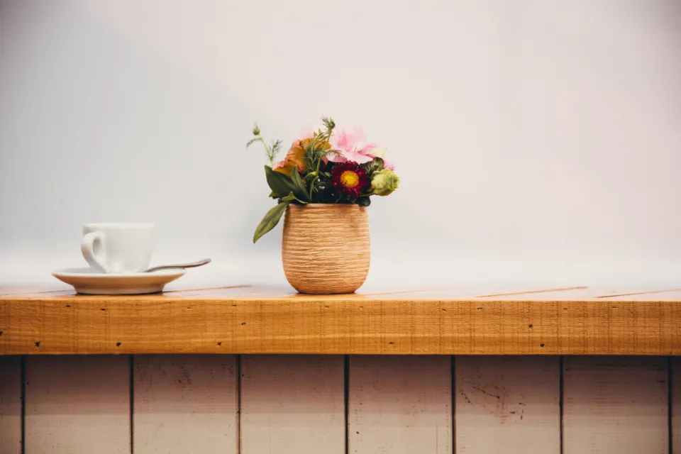

Foto Produk / artikel konsep
Satu Jendela, Satu Meja, Satu Foto Menu
Mulai dari posisi meja dan sudut pengambilan. Tambahkan properti hanya jika membantu orang memahami menu yang dijual.

Menu yang baik membantu orang membayangkan apa yang akan mereka pesan. Sebelum menata banyak properti, tentukan informasi yang harus terlihat: bentuk sajian, bahan utama, ukuran porsi, atau tekstur permukaan. Satu foto tidak harus menyampaikan semuanya.
Geser meja sebelum mengubah pengaturan
Letakkan sajian di samping jendela, lalu buat foto uji. Perhatikan sisi terang dan sisi gelapnya. Putar meja atau piring sedikit demi sedikit untuk melihat perubahan bentuk. Jika matahari langsung terlalu keras untuk tujuan foto, pindahkan meja ke cahaya yang lebih teduh.
Lembar karton putih di sisi berlawanan dapat memantulkan sebagian cahaya. Coba dekatkan dan jauhkan untuk melihat pengaruhnya. Tidak perlu menghilangkan seluruh bayangan; bayangan juga membantu menunjukkan volume makanan.
Pilih sudut sesuai bentuk menu
Foto dari atas berguna untuk menunjukkan susunan datar, sedangkan sudut yang lebih rendah dapat memperlihatkan tinggi gelas atau lapisan sajian. Gunakan bentuk makanan sebagai alasan memilih sudut. Jangan memaksakan semua menu difoto dengan cara yang sama.
Rapikan pinggir piring dan permukaan meja. Sisakan ruang yang cukup jika foto akan memuat teks harga. Periksa apakah properti tambahan menarik perhatian lebih besar daripada menu utama; jika iya, kurangi sebelum menambah.
Jaga warna dan kesesuaian sajian
Coba hindari campuran lampu dengan warna berbeda ketika ingin warna menu konsisten. Ambil satu foto uji, periksa hasilnya, lalu pertahankan penataan selama memotret satu kelompok menu. Jangan mengubah warna sampai bahan tampak berbeda dari sajian sebenarnya.
Gunakan porsi dan penataan yang sesuai dengan produk yang dijual. Foto konsep bukan alasan untuk menjanjikan jumlah atau bahan yang tidak tersedia. Setelah sesi, cek kebutuhan pemotongan untuk menu cetak, toko daring, dan media sosial secara terpisah.
Coba sendiri
Foto satu minuman dari atas dan dari sudut sekitar meja. Pilih berdasarkan informasi yang paling jelas, bukan sekadar foto yang terlihat paling ramai. Buat satu versi dengan ruang kosong untuk teks.
- Gunakan alat yang tersedia dan minta izin sebelum memotret orang.
- Simpan satu catatan untuk dibandingkan pada latihan berikutnya.